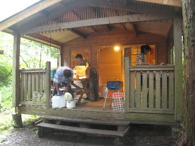
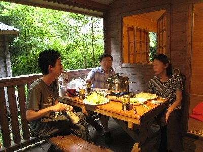
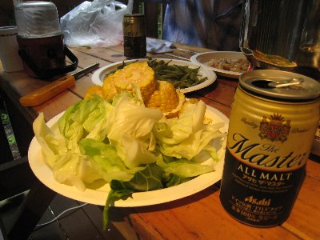
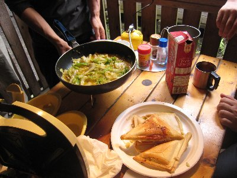

バンガローで宴会 | 2009年７月 幹事：Ryuuさん |
|---|---|
| 飲み会もやったりするけど、遠くから参加する方は時間を気にしたり、車で来ちゃうと飲め無かったりと気が気でないので、時々やっている「お泊り宴会」（キャンプとは別枠）。 今回は、西富士オートキャンプ場のログバンガローを借りての宴会です。総勢７名。 キャンプは、テントに泊まってだけど、ちょっと調理っぽいことしてみたり、前後の自然遊びを楽しんだりするのだけど、お泊り宴会は基本「飲んで話す」だけ。夕食は比較的簡単に。 | |
 森の中のバンガロ〜 |  部屋が一つとテラスが付いてます。 |
| 今回も 朝ゆっくりスタート。途中の道の駅で、ダラダラとお喋りしながら昼食。そのまま、スーパーに行って買出し。簡単に済ませるため、BBQの基本にかえり肉！出来ている焼き鳥。ソーセージに野菜。そして沢山のビール（酒）！ お昼に喋り過ぎたせいか、温泉寄る時間がなく、そのままオートキャンプ場へ。 | |
|  全員集まる前に軽く一杯 |  全てが美味い！ |
| 借りたバンガローで、材料を切っておきます。（まあ、ボクが切ったんじゃないけど）BBQセットの火を起こします。もちろんビール呑みながら。唯一手が掛かっているのが回鍋肉。送れてきたメンバーが集合したら（また）乾杯して宴会の始まり。 別に素晴らしい話をするわけではない。バカッ話をして、酒をあおり、夜は更けていきます。この日は、夜になると小雨が降り始めましたが、バンガローなので全く心配なし。（テントだとちょっと気になるよね） 夜１２時位に就寝となりました。位って言うのは、本当ならトランプでもと言っていたのに、話しすぎて暇がなく、酒が回っていたのかボクは横になったとたんに寝入り、記憶がないからです。瞬間睡眠です。のび太君並です。 | |
 みんなで飲み＆お喋り大会 |  こんな感じで夜は更けて |
| 朝は、ホットサンドを作り、キャべツ入り卵焼きとコーヒーでマッタリと。時間ぎりぎりまでバンガローで過ごしました。 友人と、時間を気にせずお喋りして、マッタリ過ごすって、とっても大事ですね。幸せです。 p.s 帰りがけに寄った「奇石博物館」も予想に反して面白かった。（写真無いけど） | |
 朝食風景 |  朝から美味かった |
| 写真＆コメント ｂｙ べっしー | |